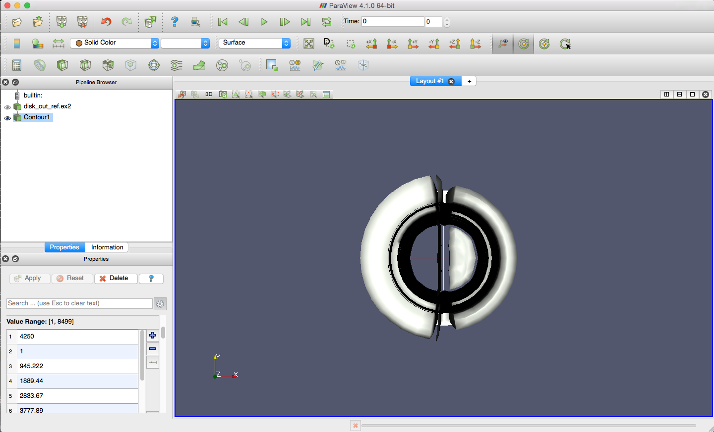
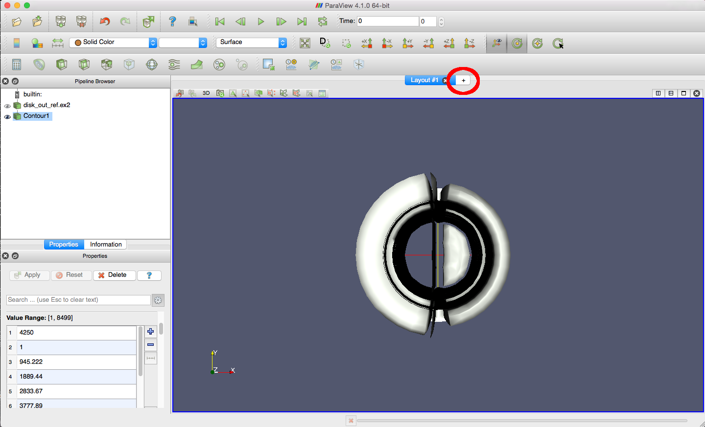
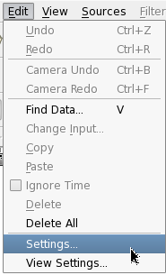
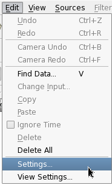
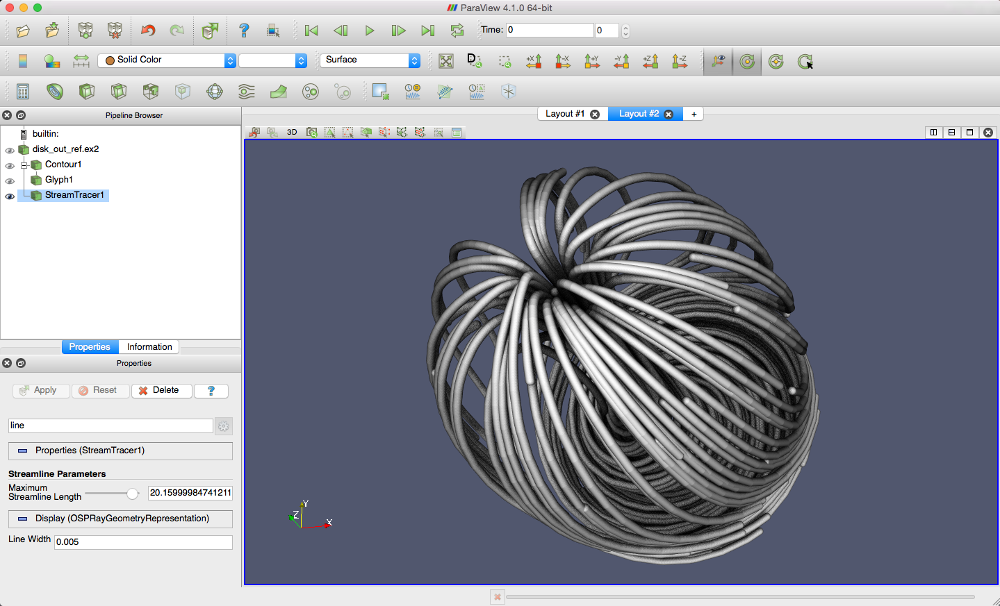

pvOSPRay Basic Visualizations
This demo show how to create basic scalar and vector visualizations of a small but interesting dataset in ParaView using OSPRay. The dataset is disk_out_ref.ex2, a simulation of the flow of air around a heated and spinning disk.
For instructions on how to enable and use pvOSPRay within ParaView, please see the walk-through demo. If you do not yet have a version of pvOSPRay installed on your system, you can follow these instructions for getting pvOSPRay.
This demo assumes that the pvOSPRay plugin is already loaded within your ParaView installation. In this demo, you will:
- Load the disk_out_ref dataset (jump to this step)
- Produce isosurfaces for the data (jump to this step)
- Open an OSPRay render window (jump to this step)
- Produce vector glyphs for the data (jump to this step)
- Manage ParaView Level-of-Detail (LOD) settings (jump to this step)
- Produce streamlines for the data (jump to this step)
Each demo image below is linked to a larger version for your reference. Just click the image to open the larger version.
Loading the Dataset
The first task in this demo is to download the dataset to your local machine. Please click the link to download (or right-click and select "Save Link As..."): disk_out_ref.ex2.

{kind=link}
{kind=link}
{kind=link}
{kind=link}
Producing Isosurfaces
The next task in this demo will produce a set of isosurfaces rendered using both the default rasterizer and the OSPRay ray tracer.
| The first step for this task is to load the ParaView contour filter, which produces isosurfaces. Click the "Contour" button in the ParaView toolbar. | |
| The ParaView default contour filter will create a single isosurface at the midpoint value of the first scalar property. We will use the range option to create a set of surfaces. Click the range button in the Properties viewer. | |
| This opens the "Add Range" dialog. We will use the default values for this section, but you are encouraged to experiment with the range and steps options to create different surface sets. Click "Ok" to create the range. | |
| The range values are added to the Property viewer. Notice that the original mid-point isovalue is still present. For this demo, we will keep it, but if you would like to remove it, highlight it, then click the minus "-" button in the Properties viewer. Once you have all your desired values for the isosurface set, click the "Apply" button in the Properties viewer. | |
| You should now see a set of isosurfaces in the display window, similar to the view shown. |  |
{kind=link}
{kind=link}
{kind=link}
{kind=link}
{kind=link}
Opening an OSPRay Render Window
The next task in this demo will render the isosurface set from the previous task using the OSPRay ray tracer. If you do not know how to load the OSPRay plugin, please see this step in the walk-through demo for instructions.
| First, open a new display window. Click the plus button "+" next to the "Layout #1" tab above the display window. |  |
| This will open the ParaView Create View dialog. Click the OSPRay option. If you do not see the OSPRay option listed, please make sure the pvOSPRay plugin is loaded by following these instructions. | |
| After selecting OSPRay a blank display window will open. Note that the dataset and contour filter are still present in the pipeline browser, but they have been hidden, noted by the grayed-out eye icons to the left of each item. Click the eye icon next to the contour filter to render the isosurface set using OSPRay. | |
| You should now see the isosurface set rendered using OSPRay. You can use the layout tabs to switch between the rasterized display in Layout #1 and the ray traced display in Layout #2. Note the differences in the shadows, particularly between surfaces. |
{kind=link}
{kind=link}
{kind=link}
{kind=link}
Producing Glyphs
This demo task will use OSPRay to render arrow glyphs to visualize a vector property of the disk_out_ref.ex2 dataset.
{kind=link}
{kind=link}
{kind=link}
{kind=link}
Managing Level-Of-Detail
ParaView has a level-of-detail (LOD) control mechanism to reduce the geometric complexity of a visualization when the camera is moved. This feature helps rasterization, since the render cost for each view is dependent on the total amount of geometry. However, the feature does not help ray tracing, since the render cost only depends on the amount of visible geometry. Further, it can hurt ray tracing, since changing the LOD level changes all the scene geometry (since the geometric representation becomes more or less refined) and the ray tracer must rebuild its internal acceleration structures.
While this LOD-jumping does not greatly impact performance for this small dataset, it can for larger data. Therefore, this task shows you how to disable LOD changes within ParaView.
| First, we will demonstrate the LOD-jumping behavior described above. Click in the display window and hold the button down, then move the cursor to change the view direction. Notice how the arrow shapes become coarser when the view moves, while the button is held down; then, the arrows return to their finer shape when the button is released. | |
|
To disable the LOD behavior, we must open the Settings dialog. In MacOSX, open the "ParaView" menu and select "Preferences..." (shown, left). In Linux, open the "Edit" menu and select "Settings..." (shown, right). |
 

|
| The Settings dialog should appear. Select the "General" sublist of the "Render View" option in the left-side list. Note that there are several options for LOD control, but for this demo, you will completely disable LOD. Uncheck the "LOD Threshold" checkbox to disable LOD completely. | |
| After the LOD Threshold box is unchecked, click "Ok". Now, changing the view direction should not change the geometry of the arrow glyphs. |
{kind=link}
{kind=link}
{kind=link}
{kind=link}
Producing Streamlines
For the final task of this demo, you will create streamlines to visualize the vector field of the disk_out_ref.ex2 dataset.
|
First, you will create a streamlines filter in the Pipeline Browser. In the ParaView toolbar, click the Streamlines button, which is immediately to the right of the glyph button. (Note that the glyphs from the previous task have already been hidden by clicking the eye icon next to Glyph in the Pipeline Browser.) |
|
| This adds a StreamTracer to the Pipeline Browser. We will use the default settings for now, so click "Apply" in the Properties viewer. | |
|
You should now see an image similar to the one shown. We will continue to use this view direction for the examples. (Note that your particular view will be the same orientation as the last view drawn for your glyph image. To reset your view to a standard orientation, use the axis view buttons, shown highlighted.) |
|
|
Where ParaView uses 2D lines to draw streamlines (see below), a ray tracer cannot render these efficiently, so pvOSPRay renders the streamlines as piecewise cylindrical tubes. This representation costs little, since OSPRay can intersect each cylinder using its implicit representation without explicitly creating tessellated geometry. Further, using a tube allows you to easily control the thickness of the lines and gives each line additional visual depth. The default width hides the internal structure and details for this dataset, so we need to reduce it. We will use the search feature of the Properties viewer to quickly find the line width option. Type "line" in the Properties viewer search box. |
|
| The search returns each option that contains "line". We will use the display option at the bottom. Experiment with various width values to observe their effect. We suggest that 0.005 strikes a good balance between texture and clarity. | |
| These images show views of the streamlines with width 0.005. |  |
| Theses images compares OSPRay rendering (left) against rasterization rendering (right) for glyphs (top) and streamlines (bottom). Notice the shading depth in the OSPRay images. |
{kind=link}
{kind=link}
{kind=link}
{kind=link}
{kind=link}
{kind=link}
{kind=link}
{kind=link}
{kind=link}